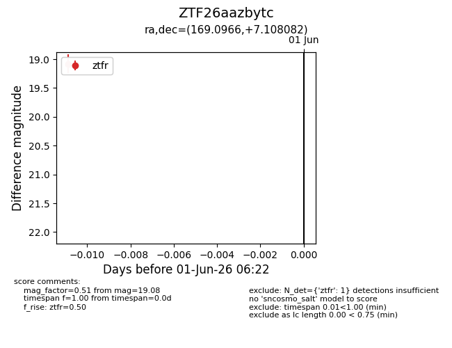
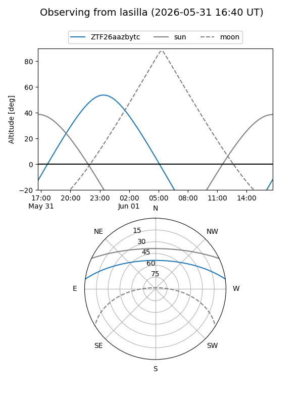
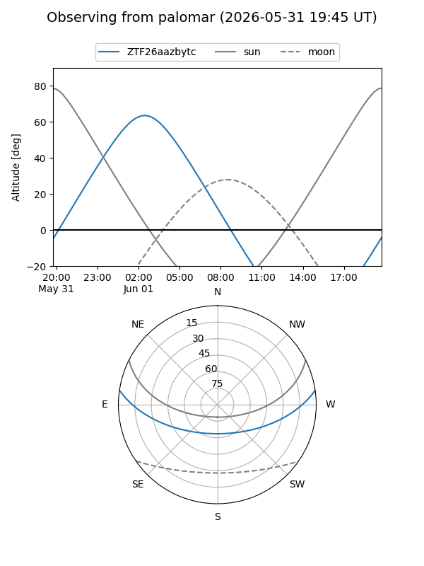

ZTF26aazbytc
Target ZTF26aazbytc at 2026-06-01 06:23
Aliases and brokers:
lsst-FINK: link
lsst-Lasair: link
lsst-ALeRCE: link
ztf-FINK: link
ztf-Lasair: link
ztf-ALeRCE: link
alt names
ZTF26aazbytc (ztf,fink_ztf)
Coordinates:
equatorial (ra, dec) = 169.0966,+7.10808
equatorial (HMS+DMS) = 11:16:23.18,+07:06:29.10
galactic (l, b) = (250.1758,+59.84843)
Flags:
Photometry:
last ztfr=19.08
1 ztfr detections
Lightcurve

Visibility


Additional plots